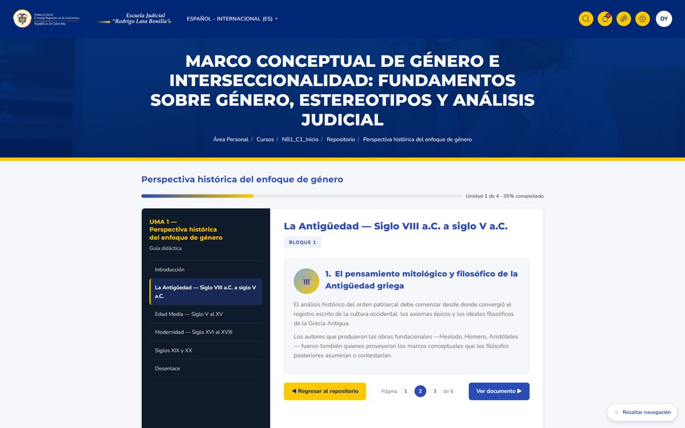
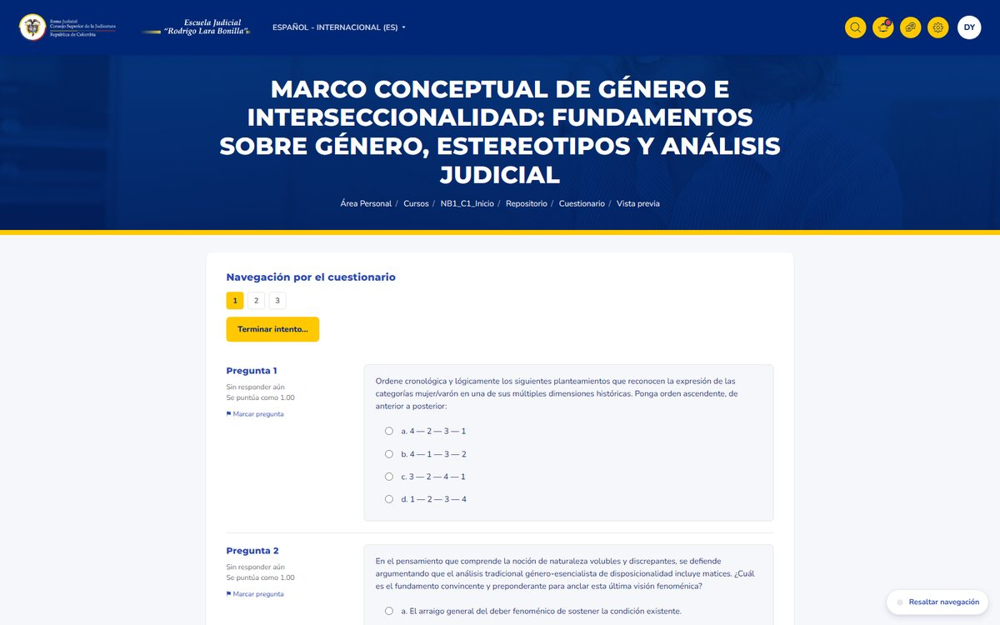

Ciclo de Formación en Género e Interseccionalidad
El reto
La Escuela Judicial necesitaba llevar formación en género e interseccionalidad a jueces, magistrados y empleados judiciales de todo el país, con niveles de profundidad distintos y sin interrumpir su trabajo diario. El material existía, pero disperso en documentos y sesiones presenciales sin trazabilidad de quién había aprendido qué.
Lo que hicimos
Diseñamos un ciclo de 14 cursos virtuales en tres niveles, con 400 horas de formación, diseño instruccional propio y objetos de aprendizaje interactivos. Desarrollamos además un plugin de Moodle de rutas de aprendizaje: cada participante hace un autodiagnóstico, recibe su ruta sugerida y la escuela monitorea el avance por perfil y por distrito judicial.
Los resultados
Galería



[Cita del cliente sobre el resultado del ciclo formativo y el acompañamiento del equipo.]
[Nombre][Cargo] · Escuela Judicial Rodrigo Lara Bonilla